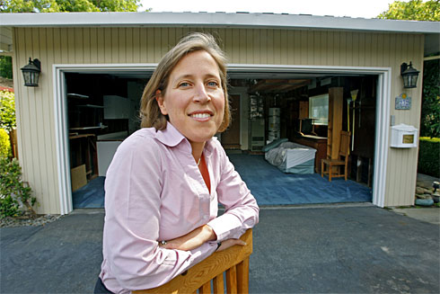
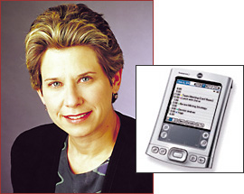
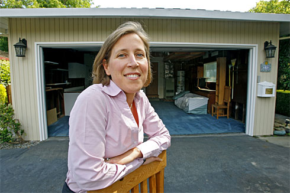
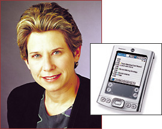

Name Origin
The term “Silicon Valley”, as it is now famously known worldwide, allegedly originated from the founder of Ion Equipment Corp, Ralph Vaerst. According to some sources, he was the one who suggested the name to Electronic News reporter Don Hoefler, who then popularized the term in a publication titled “Silicon Valley U.S.A.” on January 11, 1971 seen on the right. From there, the name stuck (Laws). Originally, it was a reference to the large number of silicon chip designers and makers in the area. Today, it is perhaps more significantly known as the home base for hundreds of major tech companies. Thirty-nine firms of the Fortune 1000 have their headquarters here, many of which were born here as startups. “Silicon Valley” is also synonymous with risk-taking and innovation, as thousands of startups rise and grow within its borders at any given time with the help of one third of the nation’s venture capital investment. So influential were the scientific and industrial developments contributed by Silicon Valley to computing technologies throughout its history that many other places of similar respect are dubbed after it colloquially or officially. The technology sector in Southern California is known as “Silicon Beach” for example.
Internet
As with many other technologies invented in the last century, the internet and its workings found its root in Cold War-era military projects. Its primary precursor, the ARPANET and its network protocols, was created by the US government in the late 60’s as a computer communications network for military installations and academic centers that aided in research and development of it. As time passed, more and more connection nodes were established across the country, and starting in the 80’s, the private sector began to collaborate in its expansion. From the 90’s into the early 2000’s, the internet rapidly matured as more commercial, public, and private uses were found for the internet through its exponentially growing bandwidth, pool of users, and availability of personal devices. Today, the internet as a whole is a powerful medium through which entire economies flow and elections may be influenced.

The internet was originally developed solely for military use and was a network of connected computers at universities. In 1969, A computer at UCLA and another at Stanford were the first to communicate over the first version of a computer network, Advanced Research Projects Agency Network, or ARPANET (“Internet”). More computers were added slowly, and a network of several dozen computers across different continents quickly formed. New protocols were developed to handle the increasing load on the network, and email use becomes prevalent. Newer networks are created to extend ARPANET with new networks and in 1989 Tim-Berners Lee devised a system of hypertext to organize the internet. Now there are over a hundred thousand computers on the internet, and it is no longer being only used for scientific research. It began to experience a dramatic rise in popularity in the mid-1990’s and is now the backbone of all of the world’s communications.
Science
Over the span of a few decades, computing hardware rapidly developed, decreasing the size of computers and increasing their speed exponentially. The development of the transistor in the mid 1900s would pave the way for all future semiconductor devices, and created a battleground in which companies strived to create the best semiconductor devices. Eight engineers, now known as the Traitorous Eight, left Shockley Laboratories after disagreeing with Shockley’s practices and founded Fairchild Semiconductor, which would lead the way in silicon transistor technologies and the invention of the modern integrated circuit. When looking for an investor, they wrote to the Hayden Stone and Company investment firm explaining their background and plans:
This prospectus is to introduce a group of seven senior scientists and engineers who have been working together in the development of transistors and other semiconductor devices… Our present dissatisfactions have arisen primarily from Shockley’s confusing and demoralizing management… The initial products would be a line of silicon diffused transistors of unusual design applicable to the production of both high frequency and high power devices...
Fairchild, along with dozens of other companies in the semiconductor race like Texas Instruments, quickly pushed the bounds of semiconductor technology and made huge strides in a small amount of time. Military use of computers is what drove most of the innovation in the early days of semiconductors development. Companies mainly focused on military applications, as airplanes and missiles needed a computer that could operate quickly and reliably while only taking up a small amount of space (Lécuyer 9). Striving to meet these goals and win sales and contracts, engineers had to think beyond what was common knowledge. They came up with new manufacturing processes, silicon doping procedures, and more precise masking abilities, to name a few. And even after developing the new technologies for making better transistors, they spent countless hours ensuring that their processes were possible to carry out for mass production. Fairchild’s first sale was to IBM, and soon afterwards many others bought their transistors. However, the first transistors had reliability issues, and the engineers explored different materials and procedures to reach . The invention of the planar transistor, and after that, the planar integrated circuit, would revolutionize the way circuitry and computing was done. Transistors of varying power and switching capabilities were designed and created to meet requirements of potential clients, once again mostly military.
During their research endeavors, engineers at Fairchild kept notebooks of all their findings to serve as a log and proof for patent applications. They now document years of scientific development that made silicon valley and the companies of today where many work at to exist. From Fairchild alone many founders went on to found new companies (Lécuyer 228).
More companies such as Intel began to settle in Silicon Valley, creating a hub of innovation and competition to build. In parallel, advances in programming languages and techniques developed to complement the advancing hardware.
Economics
In the never-ending quest for new technologies, the Silicon Valley has its booms when new ideas are hot and its busts when innovation stagnates. Job creation, while it has had its up and downs in the last couple of decades, has in general seen a massive increase from the mid 1900s to today, and recently growth has been strong. Many tech startups are trying to disrupt the industry with a some idea, novel or not, and companies in the valley attract the most venture capital money by far compared to companies in any other part of the US (Gromov). Dozens of companies in the Silicon Valley and Bay Area regions today are valued over a billion dollars, if not far more. Some of the highest traded and valued companies on the stock market are tech companies like Apple, Google, Nvidia, and AMD.
One of the worst economic crashes our country has faced, coined the “dot-com crash”, was directly related to Silicon Valley and the companies involved in that area. As the internet began experience a massive rise in publicity and popularity in 1995, reaching an estimated 18 million users by the end of the year, investors could not contain their desire to sink their teeth into this new, rapidly booming industry. It was incredibly messy--caught up with unfamiliar but appetizing terms such as “networking, new paradigm, information technologies, internet, consumer-driven navigation, tailored web experience, etc.”, investors scrambled to pull themselves deeper into the previously untouched market, throttling money into any internet company they could find. Companies and new start-ups caught on, and began churning out new IPO’s (initial public offerings of stock), waiting for investors to support their ventures, with 117 out of the initial 457 tech/internet related IPO’s in 1999 doubling in price on day one. Unfortunately, many of these investors failed to think of the long term--getting caught up with the next “big idea” rather than thinking of the unfeasible (or even unpresent) business plans that many of these start-ups had. This inevitably led to massive losses from the hands of the new and inexperienced companies, many of which only took a few months to lose all of the money handed to them. Two years later, in 2001, only 76 IPO’s were present. As a result of this crash, the Nasdaq Composite fell from 5046.86 to 1114.11 from peak to bottom, a 78% depreciation in value (Beattie).
Computer Graphics
Computer graphics are visuals, such as pictures or movies, created by computers. Even as early as the 1950s, computer graphics capabilities began to rise despite the limited power of machines of the time. For example, in 1959, the TX-2 at MIT was developed at MIT, featuring a light-pen that could draw vectors on a screen. One of the first computer games, Spacewar!, was developed on a PDP-1 in 1961. 3D graphics began to emerge in the 1980’s, and by the 1990s, fidelity had improved to the point where full-length cinema animations were rendered using the aid of computer generation such as Toy Story in 1995, the first film to be completely computer-generated. Today, photorealism does not appear to be such a far-off goal, and new companies such as Oculus have risen to bring ourselves into the virtual reality of computer graphics.
Silicon Graphics Inc. (SGI) was a major computer graphics company that was founded in Silicon Valley by Stanford students that was once at the forefront of computer graphics hardware. Starting in 1982, they developed custom integrated circuits for their computer that were designed to accelerate geometry and graphics based operations (“Silicon”). This made computational graphics and simulation accessible to a larger market through physically smaller hardware used in personal computers and supercomputers. The hardware was used in the production of films like Jurassic Park to create CGI (“Company”). However, a series of bad decisions, evolving technologies, and competing companies led SGI to fade somewhat into obscurity today. They went from a major tech company worth billions to bankruptcy; however, they are still in the supercomputer and visualization industry.
Cultural Diffusion
In the mid-twentieth century, there was a massive influx of people from across the nation, as well as overseas, seeking to take advantage of the new opportunities that had arisen in Silicon Valley. Although that name was initially used to reference the Santa Clara Valley and its neighboring counties, the rapid population growth and creation of new tech industries inevitably led to an expansion of the term to include the majority of the South San Francisco Bay Area (Gromov).As news of technological success and revolutionary ideas pervaded the nation, countless people migrated over to the West Coast, hoping for a piece of the success with the newly created tech industries. In addition to these migrants, the immigrant presence cannot be ignored when considering the successes of Silicon Valley. Hundreds of thousands of Asian and Central American people flocked to the area, taking up jobs in both manufacturing and development, rapidly making Silicon Valley one of the most diverse areas in the United States (Matthews, p. 147 - 182).
Role of Women in Technology
Silicon Valley is often thought of as a male-dominated realm, but women have always played a crucial part in numerous developments over its time. Once an Apple employee, Donna Dubinsky eventually rose to become the CEO of Palm. Under her guidance, the Palm Pilot was released, and it became one of the definitive PDA devices of its generation. Sheryl Sandberg was the vice president of global online sales for Google, and is not prominently the COO of Facebook (Hempel).
 



Dotson Interview
Aaron: How long have you lived in Silicon Valley/Bay Area?
Dotson: I moved here in 1965, and I lived in Sunnyvale, and then Palo Alto, and then Fremont.
A: Did you work for a tech company?
D: I did.
A: Which one?
D: Control Data Corporation, which was the second largest computer company at the time behind IBM. Their corporate headquarters were in Minneapolis, and we were the California branch, and they were fun because the Minneapolis people would come out and expect us all to be wearing suits and ties and heels, and you know, people here were wearing buckskin pants and fringe, and it was a great time to be doing that.
A: How long did you work for them?
D: I worked until ‘72 for them, and then I did freelance for two years after that.
A: What got you interested in whatever that you were doing?
D: I don’t know. I was a math major. I loved math, and then I became an English major accidentally, and I loved English, and when I was looking for jobs, when I first got here, I did a lot of interviewing, and I ended up interviewing at Control Data and with the Sunnyvale public library and they both offered me the job on the same day, and I thought and thought and thought and thought, and I thought I’m going to take a chance and see what this was going to be like, because I had worked with computers at college a little bit, not much.
A: What did you personally work on?
D: Personally, I was… Originally went in as [a] clerk, and they figured out that I was too smart to do that and so they took me into the documentation department, and I wrote manuals for the operating systems, and for several... We were doing COBOL and FORTRAN and one of the very first word processing programs and when I wrote the documents you had to see if the document made sense and follow your own directions and so I had to learn to program so I was programming in ASCII and binary code at first because they didn’t have the other kind. And then I ended up going into training because I had been writing the manuals on how to use it, and then I started teaching people how to use it. Then we started a video program where we were sending out video training manuals.
A: How would you describe the working environments, if it changed between each company/position; what was it like?
D: There was always the issue of being female, and it was very clear a lot of people really resented me being there. We ended up with only… there were about four female programmers in the company and probably about 150 other people, and in fact, at one point I went in for my job evaluation and my boss told me that I was probably the best worker in the department, but that since I was single and didn’t have children he was going to give the raises to the men who had children, and I didn’t get a raise that year. And that was my last year. And then I started freelancing. The other thing is that some teams didn’t want me to be working with them because... I actually got fired from one team because I smiled too much, and I said, ‘Aren’t I doing the work?’ and the answer was, ‘Yes, but you look like you’re having a good time, and the other guys feel like you’re not doing anything cause you’re smiling.”
Mitchell: I thought people expected women to always smile.
D: I think it was more a matter of they didn’t want me to be there.
Jeffrey: Just need an excuse.
D: Yeah. And when I left there I ended up working for several startup companies there were a group of us that went from startup company to startup company and if you wanted to know what the cool start up was you just had to call.. I’m sorry his name was Lance; call Lance and see where he was working because that was the cool place to be and it was likely to be. I worked for a while for Texas Instruments, and they offered me a job to become head of documentation for Texas Instruments, and I said no. And I have been kicking myself soundly for that for years but at the same time it would have required me moving to Texas.
A: Where you were working there, how did you perceive the rate of technological growth? Since you were personally involved with computers and programming, did it feel more miraculous or was it like, ‘Oh, I know exactly what steps it took to get here.’?
D: To a certain extent it was just doing what you had to do from day to day and finding new things that were working and being excited by them. Like I remember the first time… they made those huge computers, you know the ones the size of this building, and our input was with key punch cards, and when we started going beyond not having key punch cards anymore, that was kind of a miracle. But watching the differences that happened were really impressive; I know we started working on the word processing programs, and it was like a miracle. You would key punch your stuff, and then you would take it in, and they would transfer it to a magnetic tape, and they would ship the magnetic tape to LA where they would read it out and print a big page that was your proof for what you’d done and they’d send the proof with the magnetic tape back and then we would make our corrections, and we were, you know, doing the programming for where the placement was and what font you were using and all that, and that just seemed wonderful. The whole idea of being able to do word processing was so exciting.
J: What was that program called?
D: It didn’t have a name yet. It was just something we were working on; it was a word processing program. And then they were bought out by IBM and that was that. In the meantime, I had worked for them for those seven years and then I did the two years and then I had children and kinda stepped out, so when I went back to working, I was so obsolete it was incredible. I had no idea. I mean, I still had the techie brain, but I didn’t have any of the information, because it was 12 years old by then. And so that’s how I ended up going into education was because I was volunteering at my son’s school, and they were starting to put in computer labs, and I understood computers, so I would go in and volunteer and help around the labs, and then they hired me to run the lab, and I went back to college to get my credential to teach computers, but I didn’t have enough classes at college because they didn’t have computer lessons at college, so I had to become an English teacher. I mean you become a teacher based on the classes you’ve taken, and I had taken enough English classes [so] I qualified to be an English teacher, and I’m going, ‘I don’t even remember what preposition is.”
A: Is there a big difference between teaching English and teaching [computers]?
D: The thing I miss about teaching computers is that when you were teaching and people were not understanding and then suddenly there was that moment when they went, “Oh, I get it!” And there’s not a lot of that in English, but I really miss that moment when you can tell it’s working and they’re going to be able to pick it [up] and run.
Life and Loyalty in Silicon Valley
In such a concentrated pool of unquestionable talent, there will always be those who seek to improve upon what they have previously done, whether as a founder or a simple employee. From this, an interesting dynamic evolved--one in which those involved in an innovation chooses either to maintain his or her loyalty to the company and help expand its reach further, or to simply split off and create their own venture elsewhere. There were countless examples of this occurrence throughout the “boom” period of Silicon Valley, the most famous and important of which involving the so-called “Traitorous Eight”. A classic and well-known example of the potential success to be had from going out on their own, eight employees of Shockley Semiconductor left together to found Fairchild Semiconductor, two of whom then branched off to found Intel. Indeed, Fairchild and Intel rapidly turned out to be two of the most prominent and influential ventures of their time (Gromov).
Hewlett-Packard Company (HP) was founded in 1938 by in a one-car garage in Palo Alto by William "Bill" Redington Hewlett and David "Dave" Packard. Originally, HP only developed electronic testing equipment, but today, they and their spin-offs are major players in most every aspect of the computing industry, making both consumer PCs and professional products such as network and computing infrastructure hardware (“Timeline”). In 1999, HP experienced a major event--its electronic and bio-analytical instruments divisions split off from their parent company, to form Agilent Technologies. The resulting IPO shattered Silicon Valley records, with a value of 2.1 billion, compared to the measly $538 that Bill Hewlett and Dave Packard had to work with. Then, in 2014, another split occurred, with Keysight Technologies spinning off from Agilent to form a purely electronic instrument measurement company (Keysight). One of our interviewees, Mr. Joe Zhang, has been with HP, Agilent, and now Keysight through all of these splits, and we are fortunate to glean some insight as to what it was like working for these companies.
Zhang Interview
Aaron: How long have you lived in Silicon Valley/Bay Area?
Joe Zhang: I have lived in the Bay Area for 19 years.
A: What tech company did you/still work at, and for how long (when to when)?
Z: I have worked for HP, then Agilent, and finally Keysight Technologies for 19 years.
A: What got you interested in the fields you have/currently work in?
Z: I enjoy my profession, as we are responsible for building state of the art measurement equipment to solve some very complicated problems for communication systems that are used everywhere, for instance, such as those in satellite and cellular communications.
A: What did you work on?
Z: I first worked as a design engineer, and I currently am a senior engineering manager.
A: How would you describe the working environments in each company, if there are more than one, that you had worked with/at in Silicon Valley?
Z: The culture at HP, Agilent, and Keysight (more or less the same company) really reflects the HP way. In short, there is a lot of trust in each other, and a very good working environment, which promotes tolerance and encourages innovation.
A: What company appeared/is most dominant in your field?
Z: We are currently number 1 in the industry, but our biggest competitor is Rhode & Schwartz.
A: What are you most proud of throughout your years in Silicon Valley?
Z: I am most proud of building a world class R&D (Research and Development) team that have developed the industry-leading 89600 VSA software for measuring the integrity of the signal/transmitter, which is a very important part in communications systems.
A: Did/do you enjoy working in Silicon Valley? How is/was working there different from working somewhere else?
Z: I very much enjoy working in SV, the reason being the diversity and having so many smart people around, all of whom are always full of new, very exciting ideas. I really love this area, with very good food, a very diverse culture, and lots of excellent places to get kids a good education. Previous to working here, I had only held some small jobs to pay for my college education, so there really is nothing that can be compared to my experiences here.
Brucker Interview
A: So how long have you lived in the Bay Area?
B: Since November of 1997
A: What company, how long
B: Seagate Tech, 1997 to 2004
A: So, what got you started in this industry?
B: It started at Kodak in Rochester, which, you may or may not remember, had magnetic recording products at one time. There was, uh, Kodak ran VHS video tape, remember that dinosaur?
A: Oh, yeah. *laughs
B: And also the Kodak photo CD. So I was part of both of those projects, and unfortunately couldn’t persuade the powers that Kodak should enter this business. Silver Halide was incredibly profitable at the time, uh, comparable to marijuana, seriously. There was Kodak and Fuji. Gentleman’s agreement for pricing. So we were kind of an expensive hobby. At one point, around 2005-2006 our patents were just abandoned, so I shifted…optical recording was stronger at Kodak, and there was magneto-optic (magnetic optical hybrid) that I joined for a while, and uh, Kodak just didn’t make it work. I wasn’t man enough to make Kodak, you know, you think youre going to change a big company, and that was the dream, but you know, it’s tough. So, to come to closure with myself, I wrote a book, which was ultimately incorporated into a handbook, and a manager at Seagate read it and gave me a call. I never thought I’d leave Rochester, never, but that was the hook that got me thinking about it. All upstate New York farm boys dream about Southern California, Bay Area, not much difference, it’s like paradise. Salaries are not quite twice, but close to it. Company’s going to move me and my family, my kids are in preschool, so California here we come.
A: So you went to Seagate?
B: Yeah, to pursue what I knew would leverage my knowledge in magnetic recording.
A: So at Seagate, did you do more or less the same thing, or sort of move away from what you had been doing previously?
B: The material was very similar. They had a scheme on a hard disk to also employ an optical assist into magnetic recording. The challenge in magnetic recording was to go to higher and higher areal densities—more bits per square inch. And the smaller they get, the larger the coercivity, which is the switching field strength needs to be in order for it to be permanent. And…higher and higher magnetic… it was challenging to use the ability of the magnetic head to supply that field, over time, so if at the same time you were doing the magnetic writing you pulsed it with optical energy you can warm it up, which lowers the coercivity. If you heat a permanent magnet too much, then it can demagnetize. So that’s the project that I started on. So as a child, was it the dream of SoCal that drove you to this area? I was born skinny so I became a runner. I lived on a farm so I worked outside a lot. One of my first assignments, in fact, took me to San Diego for a few years, giving me a taste of paradise, so when that Seagate manager called, I couldn’t resist for a number of reasons, the weather being a big part of it. And also, this is the Mecca of engineering, Silicon Valley is like the Mecca of engineering.
A: So what really got you interested in technology as a field/industry?
B: Well, I remember one day I came home with the biggest number I’d ever seen, you know, which was a thousand. And I asked my mother, is that the biggest number in the world? And she replied, no, all you have to do is just add a comma and three zeroes. So I went off and filled up a page with zeroes, I remember that. So my dad, he could have been an engineer, in another generation. He sat me down on a porch swing when I was very young, drew a circle and its diameter, and explained the ratio. For quite a while I thought 22/7 was exact! He taught me how to take a square root by hand. There’s a lot of engineering that goes on in a farm. You had to build things, they had to be strong. At one point our largest animal, a horse, chipped a bone in its knee, and at that point the only large animal clinic in that area was at Cornell. So I saw Cornell, which was a beautiful campus, so I fell in love with that. That’s how things happen with me—I see something, and I end up going there, and I was encouraged. Also, I was the only boy among a family of 4, so I was kind of privileged. Every opportunity I could ask for.
A: So, how would you describe the working environment at all the companies you worked with?
B: At Kodak, at my engineering level—by the way, I was asterisked, at the time, in the phonebook. If you had a PhD, you were asterisked. Kind of special, which I was a bit embarrassed about. So at my level, you were given a one door office with an officemate, usually someone of a comparable status. And you had a lab, and after a few years you had a technician. There was a scientific/technical ladder, a management ladder, so the higher you went the higher you went in the building. Used to be in a big tower, it was crowded in Rochester.
A: What was it like to work with other such talented people? Was it different from before, or…
B: Pretty similar. There was graduate school, and then a postdoc at Xerox, and I missed that terribly—intellectual stimulation, working in that kind of a culture.